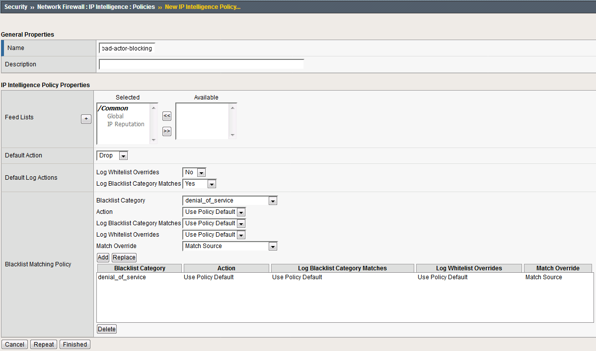

6.3. Lab 1 – Advanced Firewall Manager (AFM) DNS DoS¶
It is day two of your career at Initech, and you are under attack!! You walk into the office on day two only to learn your DNS servers are being attacked by Joanna who took out her flair frustrations on your DNS servers. Before you can protect the servers however, you must first tune and configure them appropriately. (The most challenging part of DoS based protection is tuning correctly).
Launch the Chrome shortcut titled “BIG-IP UI” on the desktop of your lab jump server. For this lab you will be working on bigip1.dnstest.lab (http://192.168.1.100). The credentials for the BIG-IP are conveniently displayed in the login banner. Just in case: admin / 401elliottW!
Navigate to Local Traffic > Nodes and create a new node with the following settings, leaving unspecified fields at their default value:
Name: lab-server-10.10.0.50
- Address: 10.10.0.50

Click Finished to add the new node.
Navigate to Local Traffic > Pools and create a new pool with the following settings, leaving unspecified attributes at their default value:
Name: lab-server-pool
Health Monitors: gateway_icmp
New Members: Node List
Address: lab-server-10.10.0.50
Service Port: * (All Services)
- Click Add to add the new member to the member list.
Click Finished to create the new pool.
Because the attack server will be sending a huge amount of traffic, we’ll need a large SNAT pool. Navigate to Local Traffic > Address Translation > SNAT Pool List and create a new SNAT pool with the following attributes:
Name: inside_snat_pool
- Member List (click Add after each IP):10.10.0.125, 10.10.0.126, 10.10.0.127, 10.10.0.128, 10.10.0.129, 10.10.0.130
- Click Finished

Navigate to Local Traffic > Virtual Servers and create a new virtual server with the following settings, leaving unspecified fields at their default value:
i. Name: udp_dns_VS j. Destination Address/Mask: 10.20.0.10 k. Service Port: 53 (other) l. Protocol: UDP m. Source Address Translation: SNAT n. SNAT Pool: inside_snat_pool o. Default Pool: lab-server-pool
- Click Finished

We’ll now test the new DNS virtual server. SSH into the attack host by clicking the “Attack Host (Ubuntu)” icon on the jump host desktop.
- Issue the
dig @10.20.0.10 www.example.com +shortcommand on the BASH CLI of the attack host. You should see output similar to: This verifies that DNS traffic is passing through the BIG-IP.
This verifies that DNS traffic is passing through the BIG-IP. Return to the BIG-IP and navigate to Local Traffic > Virtual Servers and create a new virtual server with the following settings, leaving unspecified fields at their default value:
- Name: other_protocols_VS
- Destination Address/Mask: 10.20.0.10
- Service Port: * (All Ports)
- Protocol: * All Protocols
- Any IP Profile: ipother
- Source Address Translation: SNAT
- SNAT Pool: inside_snat_pool
- Default Pool: lab-server-pool
- Click Finished
Return to the Attack Host SSH session and attempt to SSH to the server using SSH 10.20.0.10. Simply verify that you are prompted for credentials and press CTRL+C to cancel the session. This verifies that non-DNS traffic is now flowing through the BIG-IP.
{kind=link}
{kind=link}
6.3.1. Detecting and Preventing DNS DoS Attacks on a Virtual Server¶
6.3.1.1. Establishing a DNS server baseline¶
Before we can prevent Joanna from attacking our DNS server, again, we should establish a baseline for how many QPS our DNS server can handle. For this lab, let’s find the magic number of QPS that causes 50% CPU utilization on the BIND process.
Connect to the Victim Server SSH session by double-clicking the Victim Server (Ubuntu) shortcut on the jump host desktop.
From the BASH prompt, enter top and press Enter to start the top utility.
You will see a list of running processes sorted by CPU utilization, like the output below:

Connect to the Attack Host SSH session by double-clicking the Attack Host (Ubuntu) shortcut on the jump host desktop.
- Start by sending 500 DNS QPS for 30 seconds to the host using the following syntax:dnsperf -s 10.20.0.10 -d queryfile-example-current -c 20 -T 20 -l 30 -q 10000 -Q 500
Observe CPU utilization over the 30 second window for the named process. If the CPU utilization is below 45%, increase the QPS by increasing the -Q value. If the CPU utilization is above 55%, decrease the QPS. This
Record the QPS required to achieve a sustained CPU utilization of approximately 50%. Consider this the QPS that the server can safely sustain for demonstration purposes.
- Now, attack the DNS server with 10,000 QPS using the following syntax:dnsperf -s 10.20.0.10 -d queryfile-example-current -c 20 -T 20 -l 30 -q 10000 -Q 10000
You’ll notice that the CPU utilization on the victim server skyrockets, as well as DNS query timeout errors appearing on the attack server’s SSH session. This shows your DNS server is overwhelmed.
6.3.1.2. Configuring a DoS Logging Profile¶
We’ll create a DoS logging profile so that we can see event logs in the BIG-IP UI during attack mitigation.
On the BIG-IP web UI, navigate to Security > Event Logs > Logging Profiles and create a new profile with the following values, leaving unspecified attributes at their default value:
Profile Name: dns-dos-profile-logging
DoS Protection: Enabled
- DNS DoS Protection Publisher: local-db-publisher and click finish

6.3.1.3. Configuring a DoS Profile¶
We will now create a DoS profile with manually configured thresholds to limit the attack’s effect on our server.
Navigate to Security > DoS Protection > DoS Profiles
Create a new DoS profile with the name dns-dos-profile.
- Click Finished.

The UI will return to the DoS Profiles list. Click the dns-dos-profile name.
Click the Protocol Security tab and select DNS Security from the drop-down.
Click the DNS A Query vector from the Attack Type list.
Modify the DNS A Query vector configuration to match the following values, leaving unspecified attributes with their default value:
State: Mitigate
Threshold Mode: Fully Manual
Detection Threshold EPS: (Set this at 80% of your safe QPS value)
- Mitigation Threshold EPS: (Set this to your safe QPS value)

Make sure that you click Update to save your changes.
6.3.1.4. Attaching a DoS Profile¶
We will attach the DoS profile to the virtual server that we configured to manage DNS traffic.
- Navigate to Local Traffic > Virtual Servers > Virtual Server List.
- Click on the udp_dns_VS name.
- Click on the Security tab and select Policies.
- In the DoS Protection Profile field, select Enabled and choose the dns-dos-profile.
- In the Log Profile, select Enabled and move the dns-dos-profile-logging profile from Available to Selected.
- Click Update.
6.3.1.5. Simulate a DNS DDoS Attack¶
Open the SSH session to the victim server and ensure the top utility is running.
- Once again, attack your DNS server from the attack host using the following syntax:dnsperf -s 10.20.0.10 -d queryfile-example-current -c 20 -T 20 -l 30 -q 10000 -Q 10000
On the server SSH session running the top utility, notice the CPU utilization on your server remains in a range that ensures the DNS server is not overwhelmed.
After the attack, navigate to Security > Event Logs > DoS > DNS Protocol. Observe the logs to see the mitigation actions taken by the BIG-IP. Be sure to scroll right…

6.3.1.6. DNS DDoS Mitigations for Continued Service¶
At this point, you have successfully configured the BIG-IP to limit the amount of resource utilization on the BIG-IP, thus further frustrating Joanna on her flair rage. Unfortunately, even valid DNS requests can be caught in the mitigation we’ve configured. There are further steps that can be taken to mitigate Joanna’s attack that will allow non-malicious DNS queries.
6.3.1.7. Bad Actor Detection¶
Bad actor detection and blacklisting allows us to completely block communications from malicious hosts at the BIG-IP, completely preventing those hosts from reaching the back-end servers. To demonstrate:
Navigate to Security > DoS Protection > DoS Profiles.
Click on the dns-dos-profile profile name.
Click on the Protocol Security tab then select DNS Security.
Click on the DNS A Query attack type name.
Modify the vector as follows:
Bad Actor Detection: Checked
Per Source IP Detection Threshold EPS: 80
Per Source IP Mitigation Threshold EPS: 100
Add Source Address to Category: Checked
Category Name: denial_of_service
Sustained Attack Detection Time: 15 seconds
- Category Duration Time: 60 seconds
Make sure you click Update to save your changes.
Navigate to Security > Network Firewall > IP Intelligence > Policies and create a new IP Intelligence policy with the following values, leaving unspecified attributes at their default values:
- Name: dns-bad-actor-blocking
- Default Log Actions section:
- Log Blacklist Category Matches: Yes
- Blacklist Matching Policy
- Create a new blacklist matching policy:
- Blacklist Category: denial_of_service
- Click Add to add the policy then click finished
- Create a new blacklist matching policy:
Navigate to Local Traffic > Virtual Servers > Virtual Server List.
Click on the udp_dns_VS virtual server name.
Click on the Security tab and select Policies.
- Enable IP Intelligence and choose the dns-bad-actor-blocking policy.

Make sure you click Update to save your changes.
Navigate to Security > Event Logs > Logging Profiles.
Click the global-network logging profile name.
- Under the Network Firewall tab (next to Protocol Security), set the IP Intelligence Publisher to local-db-publisher and check Log Shun Events.
Click Update to save your changes.
Click the dns-dos-profile-logging logging profile name.
- Check Enabled next to Network Firewall.

- Under the Network Firewall tab, change the IP Intelligence Publisher to local-db-publisher and click Update.

Bring into view the Victim Server SSH session running the top utility to monitor CPU utilization.
- On the Attack Server host, launch the DNS attack once again using the following syntax:dnsperf -s 10.20.0.10 -d queryfile-example-current -c 20 -T 20 -l 30 -q 10000 -Q 10000
- You’ll notice CPU utilization on the BIG-IP begin to climb, but slowly drop. The attack host will show that queries are timing out as shown below. This is due to the BIG-IP blacklisting the bad actor.
Navigate to Security > Event Logs > Network > IP Intelligence. Observe the bad actor blocking mitigation logs.
- Navigate to Security > Event Logs > Network > Shun. This screen shows the bad actor being added to (and later deleted from) the shun category.
While the attack is running, navigate to Security > DoS Protection> DoS Overview (you may need to refresh or set the auto refresh to 10 seconds). You will notice from here you can see all the details of the active attacks. You can also modify an attack vector right from this screen by clicking on the attack vector and modifying the fly out.
{kind=link}
{kind=link}
{kind=link}
{kind=link}
{kind=link}

- Navigate to Security > Reporting > Protocol > DNS. Change the View By drop-down to view various statistics around the DNS traffic and attacks.

Navigate to Security > Reporting > Network > IP Intelligence. The default view may be blank. Change the View By drop-down to view various statistics around the IP Intelligence handling of the attack traffic.
- Navigate to Security > Reporting > DoS > Dashboard to view an overview of the DoS attacks and timeline. You can select filters in the filter pane to highlight specific attacks.

Finally, navigate to Security > Reporting > DoS > Analysis. View detailed statistics around each attack.

6.3.1.8. Remote Triggered Black Holing¶
The BIG-IP supports the advertisement of bad actor(s) to upstream devices via BGP to block malicious traffic closer to the source. This is accomplished by publishing a blacklist to an external resource. This is not demonstrated in this lab.
6.3.1.9. Silverline Mitigation¶
F5’s Silverline service offers “always on” and “on demand” DDoS scrubbing that could assist in this scenario as well. This is not demonstrated in this lab.
6.3.2. Filtering specific DNS operations¶
The BIG-IP offers the ability to filter DNS query types and header opcodes to act as a DNS firewall. To demonstrate, we will block MX queries from our DNS server.
Open the SSH session to the Attack Host.
- Perform an MX record lookup by issuing the following command:dig @10.20.0.10 MX example.com
The server doesn’t have a record for this domain. This server doesn’t have MX records, so those requests should be filtered
Navigate to Security > Protocol Security > Security Profiles > DNS and create a new DNS security profile with the following values, leaving unspecified attributes at their default value:
Name: dns-block-mx-query
- Query Type Filter: move mx from Available to Active and click finished
Navigate to Local Traffic > Profiles > Services > DNS. NOTE: if you are mousing over the services, DNS may not show up on the list. Select Services and then use the pulldown menu on services to select DNS.
Create a new DNS services profile with the following values, leaving unspecified values at their default values:
Name: dns-block-mx
DNS Traffic
DNS Security: Enabled
- DNS Security Profile Name: dns-block-mx-query. Click finished

Navigate to Local Traffic > Virtual Servers > Virtual Server List.
Click on the udp_dns_VS virtual server name.
In the Configuration section, change the view to Advanced.
- Set the DNS Profile to dns-block-mx.
Click Update to save your settings.
Navigate to Security > Event Logs > Logging Profiles.
Click on the dns-dos-profile-logging logging profile name.
Check Enabled next to Protocol Security.
- In the Protocol Security tab, set the DNS Security Publisher to local-db-publisher and check all five of the request log types.

Make sure that you click Update to save your settings.
- Return to the Attack Server SSH session and re-issue the MX query command:dig @10.20.0.10 MX example.com
The query hangs as the BIG-IP is blocking the MX lookup.
- Navigate to Security > Event Logs > Protocol > DNS. Observe the MX query drops.

{kind=link}
{kind=link}
This concludes the DNS portion of the lab. On the Victim Server, stop the top utility by pressing CTRL + C. No mail for you Joanna!!
6.4. Advanced Firewall Manager (AFM) Detecting and Preventing System DoS and DDoS Attacks¶
Configuring a logging destination will allow you to verify the BIG-IPs detection and mitigation of attacks, in addition to the built-in reporting.
In the BIG-IP web UI, navigate to Security > DoS Protection > Device Configuration > Properties.
Under Log Pubisher, select local-db-publisher.
- Click the Commit Changes to System button.

Joanna was feeling festive this morning. In this example, we’ll set the BIG-IP to detect and mitigate Joanna’s attack where all flags on a TCP packet are set. This is commonly referred to as a Christmas Tree Packet and is intended to increase processing on in-path network devices and end hosts to the target.
We’ll use the hping utility to send 25,000 packets to our server, with random source IPs to simulate a DDoS attack where multiple hosts are attacking our server. We’ll set the SYN, ACK, FIN, RST, URG, PUSH, Xmas and Ymas TCP flags.
In the BIG-IP web UI, navigate to Security > DoS Protection > Device Configuration > Network Security.
Expand the Bad-Header-TCP category in the vectors list.
Click on the Bad TCP Flags (All Flags Set) vector name.
Configure the vector with the following parameters:
State: Mitigate
Threshold Mode: Fully Manual
Detection Threshold EPS: Specify 50
Detection Threshold Percent: Specify 200
- Mitigation Threshold EPS: Specify 100

Click Update to save your changes.
Open the BIG-IP SSH session and scroll the ltm log in real time with the following command: tail -f /var/log/ltm
- On the attack host, launch the attack by issuing the following command on the BASH prompt:sudo hping3 10.20.0.10 –flood –rand-source –destport 80 -c 25000 –syn –ack –fin –rst –push –urg –xmas –ymas
- You’ll see the BIG-IP ltm log show that the attack has been detected:

- After approximately 60 seconds, press CTRL+C to stop the attack.

Navigate to Security > DoS Protection> DoS Overview (you may need to refresh or set the auto refresh to 10 seconds). You’ll notice from here you can see all the details of the active attacks. You can also modify an attack vector right from this screen by clicking on the attack vector and modifying the details in the fly out panel.

- Return to the BIG-IP web UI. Navigate to Security > Event Logs > DoS > Network > Events. Observe the log entries showing the details surrounding the attack detection and mitigation.

Navigate to Security > Reporting > DoS > Analysis. Single-click on the attack ID in the filter list to the right of the charts and observe the various statistics around the attack.
In the last example, Joanna crafted a packet that is easily identified as malicious, as its invalid. We’ll now simulate an attack with traffic that could be normal, acceptable traffic. The TCP SYN flood attack will attempt to DDoS a host by sending valid TCP traffic to a host from multiple source hosts.
In the BIG-IP web UI, go to Security > DoS Protection > Device Configuration > Network Security.
Expand the Flood category in the vectors list.
Click on TCP Syn Flood vector name.
Configure the vector with the following parameters:
State: Mitigate
Threshold Mode: Fully Manual
Detection Threshold EPS: 200
Detection Threshold Percent: 500
- Mitigation Threshold EPS: 400

Click Update to save your changes.
Open the BIG-IP SSH session and scroll the ltm log in real time with the following command: tail -f /var/log/ltm
- On the attack host, launch the attack by issuing the following command on the BASH prompt:sudo hping3 10.20.0.10 –flood –rand-source –destport 80 –syn -d 120 -w 64
After about 60 seconds, stop the flood attack by pressing CTRL + C.
Return to the BIG-IP web UI and navigate to Security > Event Logs > DoS > Network > Events. Observe the log entries showing the details surrounding the attack detection and mitigation.
Navigate to Security > Reporting > DoS > Dashboard to view an overview of the DoS attacks and timeline. You can select filters in the filter pane to highlight the specific attack.
Finally, navigate to Security > Reporting > DoS > Analysis. View detailed statistics around the attack.
6.4.1. Preventing Global DoS Sweep and Flood Attacks¶
In the last section, the focus was on attacks originating from various hosts. In this section, we will focus on mitigating flood and sweep attacks from a single host.
6.4.1.1. Single Endpoint Sweep¶
The single endpoint sweep is an attempt for an attacker to send traffic across a range of ports on the target server, typically to scan for open ports.
In the BIG-IP web UI, navigate to Security > DoS Protection > Device Configuration > Network Security.
Expand the Single-Endpoint category in the vectors list.
Click on Single Endpoint Sweep vector name.
Configure the vector with the following parameters:
State: Mitigate
Threshold Mode: Fully Manual
Detection Threshold EPS: 150
Mitigation Threshold EPS: 200
Add Source Address to Category: Checked
Category Name: denial_of_service
Sustained Attack Detection Time: 10 seconds
Category Duration Time: 60 seconds
- Packet Type: Move All IPv4 to Selected
Click Update to save your changes.
Navigate to Security > Network Firewall > IP Intelligence > Policies.
- In the Global Policy section, change the IP Intelligence Policy to ip-intelligence.

Click Update.
Click on the ip-intelligence policy in the policy list below.
Create a new Blacklist Matching Policy in the IP Intelligence Policy Properties section with the following attributes, leaving unspecified attributes with their default values:
- Blacklist Category: denial-of-service
- Action: drop
- Log Blacklist Category Matches: Yes
- Click Add to add the new Blacklist Matching Policy.

Click Update to save changes to the ip-intelligence policy.
Open the BIG-IP SSH session and scroll the ltm log in real time with the following command: tail -f /var/log/ltm
On the victim server, start a packet capture with an SSH filter by issuing sudo tcpdump -nn not port 22
- On the attack host, launch the attack by issuing the following command on the BASH prompt:sudo hping3 10.20.0.10 –flood –scan 1-65535 -d 128 -w 64 –syn
You will see the scan find a few open ports on the server, and the server will show the inbound sweep traffic. However, you will notice that the traffic to the server stops after a short time (10 seconds, the configured sustained attack detection time.) Leave the test running.
After approximately 60 seconds, sweep traffic will return to the host. This is because the IP Intelligence categorization of the attack host has expired. After 10 seconds of traffic, the bad actor is again blacklisted for another 60 seconds.
Stop the sweep attack on the attack host by pressing CTRL + C.
Return to the BIG-IP web UI and navigate to Security > Event Logs > DoS > Network > Events. Observe the log entries showing the details surrounding the attack detection and mitigation.
Navigate to Security > Event Logs > Network > IP Intelligence. Observe the log entries showing the mitigation of the sweep attack via the ip-intelligence policy.
Navigate to Security > Event Logs > Network > Shun. Observe the log entries showing the blacklist adds and deletes.
Navigate to Security > Reporting > Network > IP Intelligence. Observe the statistics showing the sweep attack and mitigation. Change the View By drop-down to view the varying statistics.
Navigate to Security > Reporting > DoS > Dashboard to view an overview of the DoS attacks and timeline. You can select filters in the filter pane to highlight the specific attack.
Finally, navigate to Security > Reporting > DoS > Analysis. View detailed statistics around the attack.
{kind=link}
6.4.1.2. Single Endpoint Flood¶
The single endpoint flood attack is an attempt for an attacker to send a flood of traffic to a host in hopes of overwhelming a service to a point of failure. In this example, we’ll flood the target server with ICMP packets.
In the BIG-IP web UI, navigate to Security > DoS Protection > Device Configuration > Network Security.
Expand the Single-Endpoint category in the vectors list.
Click on Single Endpoint Flood vector name.
Configure the vector with the following parameters:
State: Mitigate
Threshold Mode: Fully Manual
Detection Threshold EPS: 150
Mitigation Threshold EPS: 200
Add Destination Address to Category: Checked
Category Name: denial_of_service
Sustained Attack Detection Time: 10 seconds
Category Duration Time: 60 seconds
Click Update to save your changes.
Open the BIG-IP SSH session and scroll the ltm log in real time with the following command: tail -f /var/log/ltm
We’ll run a packet capture on the victim server to gauge the incoming traffic. On the victim server, issue the following command: sudo tcpdump -nn not port 22
- On the attack host, launch the attack by issuing the following command on the BASH prompt:sudo hping3 10.20.0.10 –faster -c 25000 –icmp
The attack host will begin flooding the victim server with ICMP packets. However, you will notice that the traffic to the server stops after a short time (10 seconds, the configured sustained attack detection time.)
After approximately 60 seconds, run the attack again. ICMP traffic will return to the host. This is because the IP Intelligence categorization of the attack host has expired.
Return to the BIG-IP web UI.
Navigate to Security > Event Logs > DoS > Network > Events. Observe the log entries showing the details surrounding the attack detection and mitigation.
Navigate to Security > Event Logs > Network > IP Intelligence. Observe the log entries showing the mitigation of the sweep attack via the ip-intelligence policy.
Navigate to Security > Reporting > Network > IP Intelligence. Observe the statistics showing the sweep attack and mitigation.
Navigate to Security > Reporting > DoS > Dashboard to view an overview of the DoS attacks and timeline. You can select filters in the filter pane to highlight the specific attack.
Finally, navigate to Security > Reporting > DoS > Analysis. View detailed statistics around the attack.
{kind=link}
This concludes the DoS/DDoS portion of the lab. You have successfully defeated Joanna, she has decided a career at Chotchkie’s is more prosperous than nefarious internet activities, even with the new flair requirements. Well done!